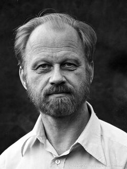

Jürgen K. Moser | |
|---|---|
 | |
| Born | July 4, 1928 |
| Died | December 17, 1999 (aged 71) Schwerzenbach, Kanton Zürich, Switzerland |
| Alma mater | University of Göttingen |
| Known for | Moser stability theorem Moser's trick Moser–Neumann question Moser–Trudinger inequality De Giorgi–Nash–Moser theory Nash-Moser theorem Kolmogorov–Arnold–Moser theorem Harnack inequality Normalized solution Volterra lattice |
| Awards | ICM Speaker (1962, 1978, 1998) George David Birkhoff Prize (1968) James Craig Watson Medal (1969) Guggenheim Fellowship (1970) Gibbs Lecture (1973) Brouwer Medal (1984) John von Neumann Prize (1984) Cantor Medal (1992) Wolf Prize (1994/1995) |
| Scientific career | |
| Fields | Mathematics, mathematical analysis, dynamical systems, celestial mechanics, partial differential equations, complex analysis |
| Institutions | New York University, MIT, ETH Zürich |
| Franz Rellich Carl Ludwig Siegel | |
Doctoral students | Charles Conley Håkan Eliasson |
Other notable students | Paul Rabinowitz |
Jürgen Kurt Moser (July 4, 1928 – December 17, 1999) was a German-American mathematician, honored for work spanning over four decades, including Hamiltonian dynamical systems and partial differential equations.
Moser's mother Ilse Strehlke was a niece of the violinist and composer Louis Spohr. His father was the neurologist Kurt E. Moser (July 21, 1895 – June 25, 1982), who was born to the merchant Max Maync (1870–1911) and Clara Moser (1860–1934). The latter descended from 17th century French Huguenot immigrants to Prussia. Jürgen Moser's parents lived in Königsberg, German empire and resettled in Stralsund, East Germany as a result of the Second World War. Moser attended the Wilhelmsgymnasium (Königsberg) in his hometown, a high school specializing in mathematics and natural sciences education, from which David Hilbert had graduated in 1880. His older brother Friedrich Robert Ernst (Friedel) Moser (August 31, 1925 – January 14, 1945) served in the German Army and died in Schloßberg during the East Prussian offensive.
Moser married the biologist Dr. Gertrude C. Courant (Richard Courant's daughter, Carl Runge's granddaughter and great-granddaughter of Emil DuBois-Reymond) on September 10, 1955, and took up permanent residence in New Rochelle, New York in 1960, commuting to work in New York City. In 1980 he moved to Switzerland, where he lived in Schwerzenbach near Zürich. He was a member of the Akademisches Orchester Zürich. He was survived by his younger brother, the photographic printer and processor Klaus T. Moser-Maync from Northport, New York, his wife, Gertrude Moser from Seattle, their daughters, the theater designer Nina Moser from Seattle and the mathematician Lucy I. Moser-Jauslin from Dijon, and his stepson, the lawyer Richard D. Emery from New York City. Moser played the piano and the cello, performing chamber music since his childhood in the tradition of a musical family, where his father played the violin and his mother the piano. He was a lifelong amateur astronomer and took up paragliding in 1988 during a visit at IMPA in Rio de Janeiro.
Moser completed his undergraduate education at and received his Dr. rer. nat. from the University of Göttingen in 1952, studying under Franz Rellich. After his thesis, he came under the influence of Carl Ludwig Siegel, with whom he coauthored the second and considerably expanded English language edition of a monography on celestial mechanics. Having spent the year 1953 at the Courant Institute of New York University as a Fulbright scholar, he emigrated to the United States in 1955 becoming a citizen in 1959.[1] He became a professor at MIT and later at New York University. He served as director of the Courant Institute of New York University in the period of 1967–1970. In 1970 he declined the offer of a chair at the Institute for Advanced Study in Princeton. After 1980 he was at ETH Zürich, becoming professor emeritus in 1995. He was director (sharing office with Armand Borel in the first two years) of the Forschungsinstitut für Mathematik at ETH Zürich in 1984–1995, where he succeeded Beno Eckmann. He led a rebuilding of the ETH Zürich mathematics faculty. Moser was president of the International Mathematical Union in 1983–1986.
In 1967, Neil Trudinger identified a new function space embedding which could be viewed as a borderline case of the Sobolev embedding theorem.[2] Moser found the sharp constant in Trudinger's inequality, with the corresponding result often known as the Moser–Trudinger inequality.[3]
In the late 1950s, Ennio De Giorgi and John Nash independently discovered the fundamental elliptic regularity theory for general second-order elliptic and parabolic partial differential equations, in which (unlike the Schauder estimates) no differentiability or continuity is assumed of the coefficients. In the 1960s, Moser identified a new approach to their basic regularity theory, introducing the technique of Moser iteration. He developed it for both elliptic and parabolic problems, and beyond recovering De Giorgi and Nash's results, he was able to use it to prove a new Harnack inequality.[2][4] In his original work, a key role was played by an extension of the John–Nirenberg lemma. Enrico Bombieri later found an argument avoiding this lemma in the elliptic case, which Moser was able to adapt to the parabolic case. The collection of these regularity results are often known as De Giorgi–Nash–Moser theory, although the original results were due solely to De Giorgi and Nash.
In 1965, Moser found new results showing that any two volume forms on a closed manifold are related to one another by scaling and pullback by a diffeomorphism, so that geometrically the total volume is the only invariant of a volume form.[5] He was able to apply the same techniques to symplectic forms, thereby proving that a cohomologous family of symplectic forms are related to one another by diffeomorphisms: this is also known as Moser's stability theorem.[6] Moser also analyzed the case of manifolds with boundary, although his argument was mistaken. Later, with Bernard Dacorogna, Moser fully carried out the analysis of the boundary case.
Moser also made an early contribution to the prescribed scalar curvature problem, showing that in any conformal class of Riemannian metrics on the projective plane, every function except for those which are nonpositive arises as a scalar curvature.[7] Moser's prior analysis of the Moser–Trudinger inequality was important for this work, highlighting the geometric significance of optimal constants in functional inequalities.
Research of Henri Poincaré and Élie Cartan in the early twentieth century had clarified the two-dimensional CR geometry, dealing with three-dimensional hypersurfaces of smooth four-dimensional manifolds which are also equipped with a complex structure. They had identified local invariants distinguishing two such structures, analogous to prior work identifying the Riemann curvature tensor and its covariant derivatives as fundamental invariants of a Riemannian metric. With Shiing-Shen Chern, Moser extended Poincaré and Cartan's work to arbitrary dimensions. Their work has had a significant influence on CR geometry.[8][9]
Among Moser's students were Mark Adler of Brandeis University, Ed Belbruno, Charles Conley (1933–1984), Howard Jacobowitz of Rutgers University, and Paul Rabinowitz of University of Wisconsin.
Moser won the first George David Birkhoff Prize in 1968 for contributions to the theory of Hamiltonian dynamical systems, the James Craig Watson Medal in 1969 for his contributions to dynamical astronomy, the Brouwer Medal of the Royal Dutch Mathematical Society in 1984, the Cantor Medal of the Deutsche Mathematiker-Vereinigung in 1992 and the Wolf Prize in 1995 for his work on stability in Hamiltonian systems and on nonlinear differential equations. He was elected to membership of the National Academy of Sciences in 1973 and was corresponding member of numerous foreign academies such as the London Mathematical Society and the Akademie der Wissenschaften und Literatur, Mainz. At three occasions he was an invited speaker at the quadrennial International Congress of Mathematicians, namely in Stockholm (1962) in the section on applied mathematics, in Helsinki (1978) in the section on Complex Analysis,[10] and a plenary speaker in Berlin (1998).[11] In 1990 he was awarded honorary doctorates from University of Bochum and from Pierre and Marie Curie University in Paris. The Society for Industrial and Applied Mathematics established a lecture prize in his honor in 2000.
Articles
Books
Name: Jurgen Kurt Moser; Age: 31; Birth Date: 4 Jul 1928; Issue Date: 2 Feb 1959; State: Massachusetts; Locality, Court: District of Massachusetts, District Court(subscription required)
{kind=link}